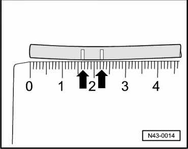

Air Line: Service and Repair
Air Line, Servicing
Special tools, testers and auxiliary items required
• Air hose pliers (VAS 6228)
Malfunctioning air lines must not be replaced completely. Partial replacement is possible using a connector.
Allocation of air line/connector.
• Repair area must be protected from splash water, for example in vehicle interior or between wheel housing liner and wheel housing.
• Harness connector must be secured to body or to cable guide using cable ties.
• Choose straight line sections for the repair area.
- Cut air line toward vehicle straight using air hose pliers (VAS 6228).
- Mark - arrows - of air line end in vehicle and partial replacement using waterproof pen.

Markings serve for checking after repair work is completed.
- Install new air line along original anchoring points.
- Insert both ends of lines into harness connector until stop.
Air lines are inserted far enough into harness connector if first color marking is no longer visible (second color marking remains visible).